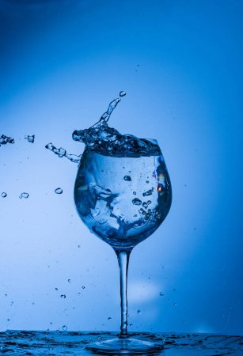

Насыщенный витаминами и минералами, этот эликсир сочетает полезные свойства зеленого чая с нотками ромашки и корня имбиря.
Насыщенный витаминами и минералами, этот эликсир сочетает полезные свойства зеленого чая с нотками ромашки и корня имбиря.

Этот ледяной напиток, сочетающий малиновый сок с лимонной травой, кожурой цитрусовых и шиповником, сделает ваш ум чистым и свежим.
/blue.jpg" alt="blue" width="300" >
Черника и вишневая эссенция, смешанные с основой чая из травы бузины, мгновенно приведут вас в блаженство.
/red.jpg" alt="red" width="300" >
Насладитесь ароматами клюквы и гибискуса в этом богатом витамином С эликсире.